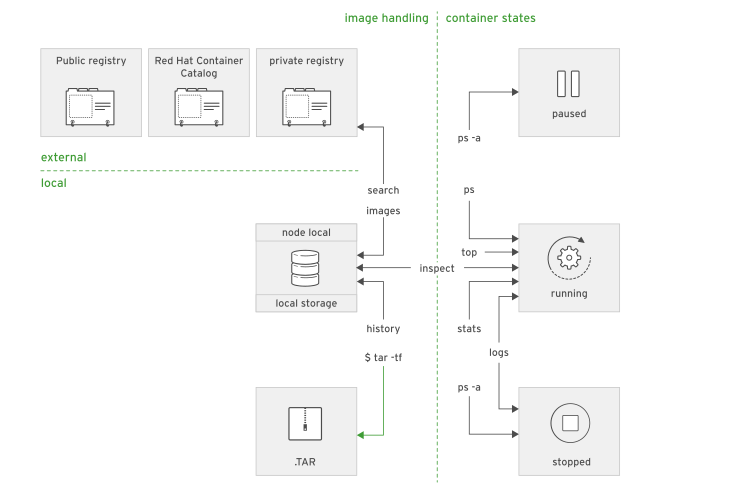

# 5 Red Hat OpenShift I: Containers & Kubernetes - DO180
5.1 Intro to Container
Containers ares a set of one or more processes that are isolated from the rest of the system.
Containers provide many of the same benefits as virtual machines, such as security, storage, and network isolation. Containers require far fewer hardware resources and are quick to start and terminate. They also isolate the libraries and the runtime resources (such as CPU and storage) for an application to minimize the impact of any OS update to the host OS.

Advantages of using container:
- Low hardware footprint : Use OS internal features to create and isolate environment, minimizing the use of cpu and memory
- Environment isolation : changes made to the host OS do not affect the container
- Quick deployment : no need to install the entire OS
- Multiple environment deployment : all appls dependencies and environment settings are encapsulated in the container image
- Reusability : container can be reused without need to set up a full OS
5.1.1 Linux Conetainer Architecture
An image is a template for containers that include a runtime environment and all the libs are configuration files, container images need to be locally available for the container runtime, below image repositories available :
- Red Hat Container Catalog : https://registry.redhat.io
- Docker Hub : https://hub.docker.com
- Red Hat Quay : https://quay.io
- Google Container Registry : https://cloud.google.com/container-registry/
- Amazon Elastic Container Registry : https://aws.amazon.com/ecr/
To manage the container we can use podman an open source tool for managing containers and container image
if need to install podman :
yum install podman5.1.2 Overview of kubernetes and OpenShift
Think : as the number of containers managed by an organization grows, the work of manually starting them rises exponentially along with the need to quickly respond to external demands
Enterprise needs:
- Easy communication between a large number of services
- Resources limits on applications regardless of the number fo containers running them
- To respond to application usage spikes to increase or decrease running containers
- Reacs to service deterioration with health checks
- Gradual roll out fo a new release to a set of users
Kubernetes is an orchestration service that simplifies the deployment, management, and scaling of containerized applications, the smallest unit if kunernetes is a pod that consist of one or more containers.
Kubernetes features of top of a container infra:
- Service discovery and loading balancing : communication by a single DNS entry to each set of container, permits the load balancing across the pool of container.
- Horizontal scaling : Appl can scale up and down manually or automatically
- Self-Healing: user-defined health checks to monitor containers to restart in case of failure
- Automated rollout and rollback : roll updates out to appl containers, if something goes wrong kubernetes can rollback to previous integration of the deployment
- Secrets and configuration management : can manage the config settings fo application without rebuilding container
- Operators : use API to update the cluster state reacting to change in the app state
Red Hat OpenShift Container Plataform (RHOCP) is a set of modular components and services build on top of Kubernetes, adds the capabilities to provide PaaS platform.
OpenShift features to kubernetes cluster :
- Itegrated developer workflow : integrates a build in container registry, CI/CD pipeline and S2I, a tool to build artifacts from source repositories to container image
- Routes : expose service to the outside world
- Metrics and logging : Metric service and aggregated logging
- Unified UI : UI to manage the different capabilities
5.2 Creating Containerized Services
The podman is designed to be a rootless container running as a non-root user, however we can run the container as root if necessary using sudo, but it is a risk and not recommenced.
The container image are named based on the syntax registry_name/user_name/image_name:tag
- registry_name : FQDN or the registry
- user_name : name of user or organization to which images belongs
- tag : identifies image version
Basic Commands:
- To search an image
podman search <image>- To download/pull an image
podman pull <image>- To retrieve the images
podman images- To run a Hello World container
[user@demo ~]$ podman run ubi8/ubi:8.3 echo 'Hello world!'
Hello world!- To start a container image as a background we can use
-doption and to expose a port-p <container port>
[user@demo ~]$ podman run -d -p 8080 registry.redhat.io/rhel8/httpd-24
# retrieve the local port on which the container listens
[user@demo ~]$ podman port -l
# test
[user@demo ~]$ curl http://0.0.0.0:44389
- To start a bash terminal inside the container
[user@demo ~]$ podman run -it ubi8/ubi:8.3 /bin/bash- Using variables with
-eoption
[user@demo ~]$ podman run --name mysql-custom \
> -e MYSQL_USER=redhat -e MYSQL_PASSWORD=r3dh4t \
> -e MYSQL_ROOT_PASSWORD=r3dh4t \
> -d registry.redhat.io/rhel8/mysql-80
# test
sudo podman exec -ti msql-custom /bin/bash
msql -uroot
show databases
Give a container a name
--name, it is important because you can manage your container by nameOther common option is
-tfor pseudo terminal an-ikeeps stdin open even if not attached
5.3 Managing Containers
5.3.1 Container Life Cybe management with podman
Podman provides a set of subcomands to create and manage containers ?

Also subcommands to extract information from containers ?

5.3.2 Creating containers
Using podman run command to create containers
# sample 1
[user@host ~]$ podman run registry.redhat.io/rhel8/httpd-24
# sample 2
[user@host ~]$ podman run --name my-httpd-container -d registry.redhat.io/rhel8/httpd-24
# sammple 3
[user@host ~]$ podman run -it registry.redhat.io/rhel8/httpd-24 /bin/bash
5.3.3 Run commands in a container
We can use exec option to submit the command
sample 2
[user@host ~]$ podman exec 7ed6e671a600 cat /etc/hostname
# sample 2 this l means latest, last container used
[user@host ~]$ podman exec -l cat /etc/hostname5.3.4 Managing containers
- List containers running :
podman ps- List all containers
podman ps -a- Stop, start or restart a container
[user@host ~]$ podman stop|start|restart <container_name>- Kill or remove a container
[user@host ~]$ podman rm|kill <container_name>
- Remove or stop all containers
podman rm|stop -a- Format the output
[student@workstation ~]$ podman ps --format="{{.ID}} {{.Names}} {{.Status}}"
a49dba9ff17f mysql Up About a minute ago5.3.5 Attaching persistent storage to containers
- Create dir
mkdir <dir>- The user running the process in the container must be capable of writing files to the dir, for example in MYSQL the UID 27
podman unshare chown -R 27:27 <dir>- Apply the container_file_t context to allow container access
sudo semanage fcontext -a -t container_file_t '/home/student/dbfiles(/.*)?' - Apply the SELinux container policy
sudo restorecon -Rv /home/student/dbfiles- Mount volume
[user@host ~]$ podman run -v /home/student/dbfiles:/var/lib/mysql rhmap47/mysql5.4 Managing Container Images
5.4.1 Accessing Registries
Image registries are services offering container images to download. They allow image creators and maintainers to store and distribute container images to public or private audiences.
To configure registreis for podman command we need to update /etc/containers/registries.conf
- To search :
[user@host ~]$ podman search [OPTIONS] <term>- To authenticate
podman login <registry>- Pull images
[user@host ~]$ podman pull [OPTIONS] [REGISTRY[:PORT]/]NAME[:TAG]
[user@host ~]$ podman pull quay.io/bitnami/nginx- List local copies
podman images- Images Tags
An image tag is a mechanism to support multiple releases of the same image
[user@host ~]$ podman pull registry.redhat.io/rhel8/mysql-80:1
[user@host ~]$ podman run registry.redhat.io/rhel8/mysql-80:15.4.2 Manipulating Container Images
- Save and load an image
Images can be saved as .tar file :
# Save
podman save [-o FILE_NAME] IMAGE_NAME[:TAG]
podman save -o mysql.tar registry.redhat.io/rhel8/mysql-80
#Load
podman load [-i FILE_NAME]
podman load -i mysql.tar
- Delete an image from local storage
podman rmi [OPTIONS] IMAGE [IMAGE...]
# To delete all
podman rmi -a- To modify an image
[user@host ~]$ podman commit [OPTIONS] CONTAINER [REPOSITORY[:PORT]/]IMAGE_NAME[:TAG]To see the difference that we have made on container we can use podman diff <image>
- To commit changes
[user@host ~]$ podman commit mysql-basic mysql-custom- Tagging Images
podman tag [OPTIONS] IMAGE[:TAG] [REGISTRYHOST/][USERNAME/]NAME[:TAG]
# sample 1
podman tag mysql-custom devops/mysql
# sample 2
podman tag mysql-custom devops/mysql:snapshot- Push images to registry
[user@host ~]$ podman push [OPTIONS] IMAGE [DESTINATION]
# sample
[user@host ~]$ podman push quay.io/bitnami/nginx- To remove tags from image
podman rmi devops/mysql:snapahot5.5 Creating Custom Container Images
5.5.1 Designing Custom Container Images
One method to create a container image is modify the existing one to meet the requirements of the application. Containerfiles are another option that make this task easy to create, share and control the image.
Red Hat Software Collections Library (RHSCL) : solution for developers who require the latest development tools that usually do not fit the standard RHEL release schedule.
Red Hat Enterprise Linux (RHEL) : stable environment for enterprise applications.
We can finding Containerfiles from Red HAt Collections Library, RHSCL is the source of most container images provided by the Red Hat image registry for use by RHEL Atomic Host and OpenShift Container Platform customers.
Also Red Hat Container Catalog RHCC is a repository of reliable, tested, certified, and curated collection of container images built on versions of Red Hat Enterprise Linux (RHEL) and related systems
Quay.io is an advanced container repository from CoreOS, we can search for container images using httpds://quay.io/search
Docker Hub is a repository that anyone can crete and share an image, need to be carreful with images from Docker Hub
Source-to-Image (S2I) the OpenShift source-to-image tool is an alternative to using Containerfiles to create new containers that can be use from OpenShift or as standalone s2i utility, The S2I use the follow process to build a custom container image:
- Start a container from a base container image called the builder image.
- Fetch the application source code, usually from a Git server, and send it to the container.
- Build the application binary files inside the container.
- Save the container, after some clean up ### Building Custom Container images with Containerfiles
A Containerfile is a mechanism to automate the building of container images, to build we have three steps:
- Create a working directory
- Write the Containerfile
- Build the image with Podman
# This is a comment line
FROM ubi8/ubi:8.3
LABEL description="This is a custom httpd container image"
MAINTAINER John Doe <jdoe@xyz.com>
RUN yum install -y httpd
EXPOSE 80
ENV LogLevel "info"
ADD http://someserver.com/filename.pdf /var/www/html
COPY ./src/ /var/www/html/
USER apache
ENTRYPOINT ["/usr/sbin/httpd"]
CMD ["-D", "FOREGROUND"]FROM: declares that the new container image extends ubi8/ubi:8.3 container base imageLABEL: is responsible for adding generic metadata to an imageMAINTAINER: Indicates the authorRUN: executes commands in a new layer on top of the current imageEXPOSE: indicates that the container listens on the specified network port at runtimeENV: is responsible for defining environment variables that are available in the containerADD: copies files or folders from a local or remote source and adds them to the containers file system, ADD also unpack local .tar filesCOPY: copies files from the working directory and adds them to the containers file systemUSER: specifies the username or the UID to use when running the container image for the RUN, CMD, and ENTRYPOINT instructionsENTRYOINT: specifies the default command to execute when the image runs in a container.CMD: provides the default arguments for the ENTRYPOINT instruction
Building Image with Podman
Podman build command process the Containerfile and build a new image
podman build -t NAME:TAG DIRImage layering
- Each instruction in a Containerfile create a new layer
Sample
Creating a container file
FROM rhel7:7.5
MAINTAINER Bruno Machado <bmachado@kyndryl.com>
LABEL description = "A custom Apache image"
ADD training.repo /etc/yum.repos.d/training.repo
RUN yum install -y htppd && \
yum clean all
RUN echo "Hello from Containerfile " > /usr/share/httpd/noindex/index.html
EXPOSE 80
ENTRYPOINT ["httpd","-D","FOREGROUND"]Build
# Build
sudo podman build -t d080/apache .
# Check images:
sudo pdman images
# Run the container
sudo podman run --name lab-apache -d -p 10080:80 do080/apache
# Test with curl
curl 127.0.0.1:100805.6 Deploying Containerized Applications on OpenShift
5.6.1 Describing Kubernetes and OpenShift Architecture
Kubernetes and OpenShift
Kubernetes is an orchestration service that simplifies the deployment, management, and scaling of containerized applications.
Kubernetes Terminology :
- Node : A server that hosts applications in a Kubernetes cluster.
- Control Plane : Provides basic cluster services such as APIs or controllers.
- Compute Node : This node executes workloads for the cluster. Application pods are scheduled onto compute nodes.
- Resource : kind of component definition managed by Kubernetes. Resources contain the configuration of the managed component and the current state of the component
- Controller : A controller is a Kubernetes process that watches resources and makes changes attempting to move the current state towards the desired state.
- Label : A key-value pair that can be assigned to any Kubernetes resource. Selectors use labels to filter eligible resources for scheduling and other operations.
- Namespace : A scope for Kubernetes resources and processes, so that resources with the same name can be used in different boundaries.
Red Hat OpenShift Container Platform is a set of modular components and services built on top of Red Hat CoreOS and Kubernetes. RHOCP adds PaaS capabilities such as remote management, increased security, monitoring and auditing, application lifecycle management, and self-service interfaces for developers.
OpenShift Terminology
- Infra Node : A node server containing infrastructure services like monitoring, logging, or external routing
- Console : A web UI provided by the RHOCP cluster that allows developers and administrators to interact with cluster resources
- Project : OpenShift extension of Kubernetes namespaces. Allows the definition of user access control (UAC) to resources.

CoreOS is a Linux distribution focused on providing an immutable operating system for container execution
CRI-O is an implementation of the Kubernetes Container Runtime Interface CRI
Kubernetes manages a cluster of hosts, physical or virtual that run containers.
Etcd : Key-value store to store config and state information about container and other resources
CRD C_ustom Resource Definition_ are resource types stored in Etcd and managed by Kubernetes
Containerized services fulfill many PaaS infrastructure functions, such as networking and authorization.
Runtimes and xPaaS based container images ready for use for dev
RHOCP provides web UI and CLI tools for managing user application
OpenShift and Kubernetes architecture illustration
On the below fig we can see the control plane that control de cluster, runs on CoreOS, and Node e Infra Pods to do the own work on OpenShift.
We can have storage on Ceph, Gluster or from vendor. These runs on Bare metal or on cloud
Describing Kubernetes Resource Types
- Pods (po) : collection of containers that share resources
- Services (svc) : How pods talk with each other. Single IP/port combination that provides access to a pool of pods
- Replication Controllers (rc) : how pods are replicated into different notes
- Persistent Volumes (pv) : Define storage areas to be used by Kubernetes pods.
- Persistent Volume Claims (pvc) : Represent a request for storage by a pod.
- ConfigMaps (cm) and Secrets : Contains a set of keys and values that can be used by other resources
OpenShift Resource Types
- Deployment and Deployment Config (dc) : Both are the representation of a set of containers, it contains the configuration to be applied to all containers of each pod replica (images, tags, storage definitions, etc)
- Build config (bc) : Process to be executed in the OpenShift project. A bc works together with a dc to provide a basic CI/CD workflows.
- Routes : Represent a DNS host name recognized by the OpenShift router as an ingress point for applications and microservices.
5.6.2 Creating Kubernetes Resources
The main method to interacting with an RHOCP is using oc command line
oc <command>
oc login <clusterURL>
The pod resource definition syntax can be provided by JSON or YAML
Sample of YAML format
apiVersion: v1
kind: Pod
metadata:
name: wildfly
labels:
name: wildfly
spec:
containers:
- resources:
limits:
cpu: 0.5
image: do276/todojee
name: wildfly
ports:
- containerPort: 8080
name: wildfly
env:
- name: MYSQL_ENV_MYSQL_DATABASE
value: items
- name: MYSQL_ENV_MYSQL_USER
value: user1
- name: MYSQL_ENV_MYSQL_PASSWORD
value: mypa55Discovering services
Using IP and port :
- SVC_NAME_SERVICE_HOST is the service IP address.
- SVC_NAME_SERVICE_PORT is the service TCP port.
Using DNS:
SVC_NAME .PROJECT_NAME.svc.cluster.local
To create a tunel to our machine
[user@host ~]$ oc port-forward mysql-openshift-1-glqrp 3306:3306Creating application
# sample 1
[user@host ~]$ oc new-app mysql MYSQL_USER=user MYSQL_PASSWORD=pass MYSQL_DATABA SE=testdb -l db=mysql
- Create using docker image
# sample 2 using docker img
oc new-app --docker-image=myregistry.com/mycompany/myapp --name=myapp- Create using Git Repo
# sample 3 from Git
oc new-app https://github.com/openshift/ruby-hello-world --name=ruby-hello- Creating from template
# from template
$ oc new-app \
--template=mysql-persistent \
-p MYSQL_USER=user1 -p MYSQL_PASSWORD=mypa55 -p MYSQL_DATABASE=testdb \
-p MYSQL_ROOT_PASSWORD=r00tpa55 -p VOLUME_CAPACITY=10Gi
...output omitted..Managing Persistent Storage
- List persistent volume objects
[admin@host ~]$ oc get pv- See the YAML definition for a PersistentVolume
[admin@host ~]$ oc get pv pv0001 -o yaml- Add more PersistentVolume objects
[admin@host ~]$ oc create -f pv1001.yamlRequest persistent volume
- Create a pvc object request :
We create a PersistentVolumeClaim (PVC) object to request :
apiVersion: v1
kind: PersistentVolumeClaim
metadata:
name: myapp
spec:
accessModes:
- ReadWriteOnce
resources:
requests:
storage: 1Gi- To create the PVC :
[admin@host ~]$ oc create -f pvc.yaml- To list the PVCs
[admin@host ~]$ oc get pvcManaging OpenShift Resources at the command line
The oc get RESOURCE_TYPE command display the summary of all resources
oc get all: retrieve a summary of the most important componentsoc describe RESOURCE_TYPE|RESOURCE_NAME: retrieve additional informationoc get RESOURCE_TYPE|RESOURCE_NAME: export a resource definition.oc create RESOURCE_TYPE|RESOURCE_NAME: create resourcesoc edit: edit resource definitionsoc delete RESOURCE_TYPE: remove resource from openshiftoc exec CONTAINER_ID: executes commands inside a container.
Tip :
If we use label we can make reference by label
$ oc get svc,deployments -l app=nexus5.6.3 Creating Routes
A route connects a public-facing IP address and DNS host name to an internal-facing service IP. It uses the service resource to find the endpoints; that is, the ports exposed by the service.
OpenShift routes are implemented by a cluster-wide router service, sample of route defined using JSON:
{
"apiVersion": "v1",
"kind": "Route",
"metadata": {
"name": "quoteapp"
},
"spec": {
"host": "quoteapp.apps.example.com",
"to": {
"kind": "Service",
"name": "quoteapp"
}
}
}- Creating routes
$ oc expose service quotedb --name quote- Inspect the routes
$ oc get pod --all-namespaces | grep router
> openshift-ingress router-default-746b5cfb65-f6sdm 1/1 Running 1 4d
# describe :
$ oc describe pod router-default-746b5cfb65-f6sdm5.6.4 Creating Applications with Source-to-Image
- Source-to-Image (S2I) : This tool takes an applications source code from a Git repository, injects the source code into a base container and produces a new container image that runs the assembled application.
Image stream resource is configuration that names specific container images to get the list of default images streams populated by OpenShift
$ oc get is -n openshift
Buyild an application with S2I and CLI
- From Git
$ oc new-app php~http://my.git.server.com/my-app
# or another syntax
$ oc new-app -i php http://services.lab.example.com/app --name=myapp
- From path
oc new-app .- Using contect
$ oc new-app https://github.com/openshift/sti-ruby.git --context-dir=2.0/test/puma-test-app- Specific branch
$ oc new-app https://github.com/openshift/ruby-hello-world.git#beta4After creating a new application, the build process starts we can check using get builds command
$ oc get builds- Check the logs
$ oc logs build/myapp-1- Trigger a new build with the
oc start-build build_config_namecommand
$ oc get buildconfig
$ oc start-build myapp5.7 Deploying Multi-Container Applications
5.7.1 Considerations for Multi-Container Applications
- Complex applications have different components such as fron-end, REST back end and database server, it is possible to orchestrate multi-conatiner applications manually, but openshift and kubernets provide tools to facilite that.
5.7.2 Deploying A Multi-Container App on OpenShift
Pods are attached to a Kubernetes namespace, which OpenShift calls a project
When a pod starts, Kubernetes automatically adds a set of environment variables for each service defined on the same namespace.
Any service defined on Kubernetes generates environment variables for the IP address and port number where the service is available
Kubernetes automatically injects these environment variables into the containers from pods in the same namespace
<SERVICE_NAME>_SERVICE_HOST: Represents the IP address enabled by a service to accessa pod.<SERVICE_NAME>_SERVICE_PORT: Represents the port where the server port is listed.<SERVICE_NAME>_PORT: Represents the address, port, and protocol provided by the service for external access.<SERVICE_NAME>_PORT_<PORT_NUMBER>_<PROTOCOL>: Defines an alias for the<SERVICE_NAME>_PORT.<SERVICE_NAME>_PORT_<PORT_NUMBER>_<PROTOCOL>_PROTO: Identifies the protocol type (TCP or UDP).<SERVICE_NAME>_PORT_<PORT_NUMBER>_<PROTOCOL>_PORT: Defines an alias for<SERVICE_NAME>_SERVICE_PORT.<SERVICE_NAME>_PORT_<PORT_NUMBER>_<PROTOCOL>_ADDR: Defines an alias for<SERVICE_NAME>_SERVICE_HOST.
5.7.3 Deploying a Multi-container Application on OpenShift Using a Template
A template defines a set of related resources to be created together, as well as a set of application parameters.
The OpenShift installer creates several templates by default in the openshift namespace.
[user@host ~]$ oc get templates -n openshift- Check the YAML definition of template
[user@host ~]$ oc get template mysql-persistent -n openshift -o yaml- Assuming the template is defined in the todo-template.yaml file, use the oc create command to publish the application template:
[user@host deploy-multicontainer]$ oc create -f todo-template.yaml- list available parameters from a template.
[user@host ~]$ oc describe template mysql-persistent -n openshift
or
[user@host ~]$ oc process --parameters mysql-persistent -n openshift- Processing a Template Using the CLI
[user@host ~]$ oc process -o yaml -f <filename>- Templates often generate resources with configurable attributes that are based on the template
parameters. To override a parameter, use the -p option followed by a
= pair.
[user@host ~]$ oc process -o yaml -f mysql.yaml -p MYSQL_USER=dev -p MYSQL_PASSWORD=$P4SSD -p MYSQL_DATABASE=bank -p VOLUME_CAPACITY=10Gi > mysqlProcessed.yaml- To create an application use the generated YAML
[user@host ~]$ oc create -f mysqlProcessed.yaml- Alternatively, it is possible to process the template and create the application without saving a resource definition file by using a UNIX pipe:
[user@host ~]$ oc process -f mysql.yaml -p MYSQL_USER=dev -p MYSQL_PASSWORD=$P4SSD -p MYSQL_DATABASE=bank -p VOLUME_CAPACITY=10Gi | oc create -f -5.8 Troubleshooting Containerized Applications
5.8.1 Troubleshooting S2I Builds and Deployments
Introduction to the S2I Process
S2I is simple way to create image, however problems can heppens is important to keep in mind the workflow for most of the program languages :
- Build step :
- compiling source code, packaging the application as a container image
- push the image to the OpenShift registry for deployment step
- BC (BuildConfig) drive the build step
- Deployment step :
- starting a pod and making the application available
- executes after the build step
- Check the logs
$ oc logs bc/<application-name>- request a new build:
$ oc start-build <application-name>- Check the deployment logs
$ oc logs deployment/<application-name>Common Problems
The oc logs command provides important information about the build, deploy, and run
processes of an application during the execution of a pod. The logs may include :
* missing values
* options that must be enabled
* incorrect parameters or flags
* environment incompatibilities,etc
5.8.2 Troubleshooting Containerized Applications
Sometimes sysadmin need special access to container for example the dba need access the database container to check the database or sysadmin need to restart an specific service on a container, podman provides port forwarding features by using -p option with the `run`` subcommand
$ podman run --name db -p 30306:3306 mysqlOpenShift provide the oc port-foward command for fowarding a local port to a pod port.
$ oc port-forward db 30306 3306- To access the container logs
$ podman logs <containerName>- To access openshift logs
$ oc logs <podName>- To read openshift events
$ oc get events- Accessing Running Container
$ podman exec [options] container command [arguments
$ oc exec [options] pod [-c container] -- command [arguments]
# sample
$ oc exec -it myhttpdpod /bin/bash
$ podman exec apache-container cat /var/log/httpd/error_log- Transfer file to and from containers
$ podman run -v /conf:/etc/httpd/conf -d do180/apache
$ podman cp standalone.conf todoapi:/opt/jboss/standalone/conf/standalone.conf
$ podman cp todoapi:/opt/jboss/standalone/conf/standalone.conf .